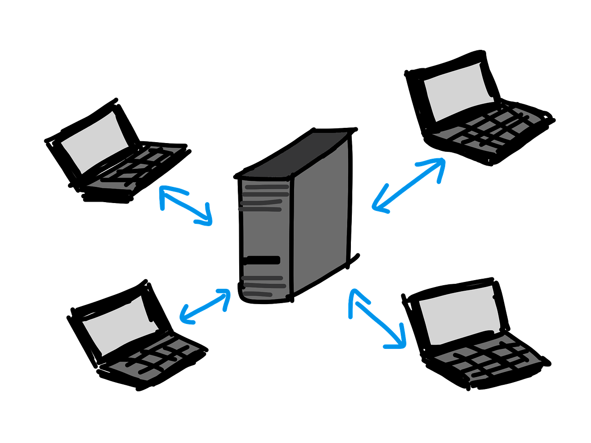
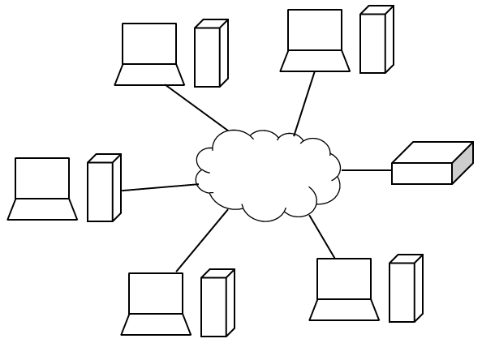
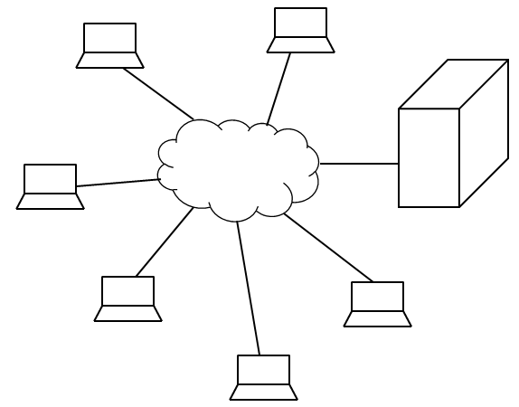

5.1. Modelo cliente / servidor

Modelo cliente servidor
Imagen de pixabay.com (Autor: sandra_schoen). Recuperado de https://pixabay.com/es/cliente-servidor-redes-341420 Licencia CC0 de Creative Commons. Gratis para usos comerciales. No es necesario reconocimiento.
El modelo cliente – servidor es una arquitectura que se utiliza mucho en la comunicación entre ordenadores. Es un modelo de comunicación simple pero a la vez eficiente. Es simple si se compara, por ejemplo, con el modelo de comunicación OSI en donde se produce la comunicación entre ordenadores simplemente con el intercambio de mensajes. No existe una torre de protocolos, por tanto, no hay que perder tiempo en interpretar las cabeceras. Tampoco hay que establecer una conexión entre los ordenadores implicados en la comunicación, por tanto, es una forma simple de intercambio de datos. De hecho, se dice que en este tipo de arquitecturas el acoplamiento entre las entidades involucradas es muy débil.
Lo normal es que se tenga un programa ejecutándose en una computadora. Puede que a este programa le haga falta algún dato y para ello existe un servidor al que el cliente puede hacer peticiones y obtener estos datos. Estas peticiones al servidor por parte de los clientes son transparentes para el usuario. Al final se le muestra el resultado del programa que él está ejecutando a través del cliente.
Lo único que necesita un cliente es tener conectividad con el servidor para poder enviarle consultas para obtener las respuestas. Puede existir uno o muchos clientes así como uno o varios servidores. Lo habitual es que haya más servidores que clientes. En un mismo ordenador puede haber software que haga que la computadora sea un cliente para también puede haber otros programas que hagan que el ordenador actúe como servidor.
En un modelo cliente – servidor, hay un programa que corre en una computadora que es el servidor y que ofrece un servicio. De hecho, está constantemente escuchando solicitudes de servicio por parte de clientes. El diálogo lo inicia los clientes con una solicitud de servicio que es recibida por el servidor, procesada y devuelto el resultado al cliente como respuesta a dicha solicitud.
Es posible que un cliente utilice un software propietario y tenga que comunicarse con un servidor que también utilice software de otro fabricante. En estos casos, la comunicación puede ser complicada y es necesario la utilización de un elemento intermedio que facilite esta comunicación. A este elemento se le conoce como middleware.
Importante
En un modelo cliente – servidor, hay un programa que corre en una computadora que es el servidor y que ofrece un servicio. De hecho, está constantemente escuchando solicitudes de servicio por parte de clientes. El diálogo lo inicia los clientes con una solicitud de servicio que es recibida por el servidor, procesada y devuelto el resultado al cliente como respuesta a dicha solicitud.
FORMAS DE IMPLEMENTAR EL MODELO CLIENTE - SERVIDOR
El modelo cliente - servidor se puede implementar de distintas formas.
Una de ellas puede ser atendiendo a la naturaleza del servicio que ofrecen. Hay servidores de diferentes tipos:
Servidores de impresión. Este tipo de servidores suelen controlar los servicios de impresión de una red o un dominio. Lógicamente, deben tener la posibilidad de gestionar una o varias impresoras para poder repartir los trabajos de impresión y controlar las colas de los trabajos que van entrando. Un ejemplo de servidor de impresión muy simple puede ser un ordenador de una red de área local que tenga conectada una impresora y tenga compartida la misma para que otros usuarios puedan encontrar la impresora en la red y poder enviar trabajos para imprimir.
Servidores de ficheros. Estos servidores proporcionan a los ordenadores de una red o un dominio un medio de almacenamiento para poder leer y escribir datos. Esto implica una planificación de la red adecuada ya que en el segmento de red donde se encuentre el servidor va a existir bastante intercambio de información.
Servidores web. Este tipo de servidores son muy utilizados en la actualidad. Cualquier persona con unos conocimientos mínimos puede instalar en un PC un servidor web en el que se pueden alojar páginas web. Estas páginas estarán accesible a otros usuarios a través de un navegador web que utiliza el protocolo http para poder acceder a ellas.
Servidor de base de datos. Es muy frecuente que cuando un usuario quiere poner en marcha un servidor web, en el proceso de instalación, también sea necesario instalar un gestor de base de datos. Mediante una base de datos se puede almacenar información y hacer que esta sea fácilmente localizable de forma que cuando un cliente realice una consulta sobre unos datos que le hacen falta, la respuesta a la misma sea rápida. Como ejemplo, se puede comentar una página web que se dedica a la venta de unos productos. Cuando un usuario pone un filtro en una página para que se muestren los productos que cumplan unos determinados requisitos, lo normal es que esos productos estén almacenados y clasificados correctamente en una base de datos, de forma que el servidor web realice una consulta a la base de datos con los criterios establecidos. Con el resultado de la consulta, el servidor prepara la respuesta para enviársela al cliente y que el usuario pueda ver el resultado de su consulta.
Como se puede comprobar, servidores en función del servicio hay tantos como servicios existentes. En este apartado se han nombrado algunos a modo de ejemplo.
En la arquitectura cliente - servidor también es posible encontrar diferentes implementaciones en función del tamaño de los elementos de la arquitectura.
A modo de ejemplo nos podemos imaginar una aplicación o un programa que se puede instalar en un ordenador para presentar unos datos que residen en un servidor remoto. En este caso, es posible distinguir varias capas:
- Capa de presentación. La función de esta capa es la de presentar la información que el usuario ha solicitado.
- Capa de datos. En este capa, se tienen los datos almacenados de una forma adecuada para poder ser consultados eficientemente.
- Capa de negocio. Esta capa es la que se encuentra justo entre las dos anteriores. Por un lado, recibe las peticiones del usuario (que utiliza para ello la capa de presentación), se encarga de procesar la petición y de enviarle la respuesta a la misma. Lo normal es que esa petición necesite la consulta a unos datos concretos, para ello, la capa de negocio se encargará de hacer las peticiones oportunas a la capa de datos para obtener los datos necesarios. Además, se pueden establecer determinadas reglas para aceptar las peticiones de los usuarios.
Una vez que se han descrito las principales capas que se pueden tener en una arquitectura cliente - servidor, ahora es posible distinguir diferentes implementaciones en función del tamaño de los componentes de la arquitectura:
- Fat client (Thin server)
El cliente asume la capa de presentación y la de negocios, aprovechando de la potencia de procesamiento que puede tener cada cliente. Se deja para el servidor únicamente la capa de datos. Este modelo es poco flexible en cuanto a la mejora del servicio, ya que cualquier cambio implicaría la compilación del programa y reinstalación en todos los clientes.

Fat client (Thin client)
Imagen de elaboración propia
- Fat server (Thin client)
En este caso, el cliente solo asume la capa de presentación y se deja la capa de negocio y datos para el servidor. Como ventajas, en este caso se dispone de flexibilidad para ofrecer el servicio, ya que cualquier cambio que se produzca solo hay que actualizar el servidor que es donde reside la capa de negocio. En cambio, se deja todo el procesamiento al servidor de manera que se desaprovecha la posible potencia que puedan tener los clientes. También puede implicar un elevado intercambio de datos entre el servidor y los clientes, dado que estos se dedican única y exclusivamente a presentar la información que le ha preparado el servidor.

Fat server (Thin client)
Imagen de elaboración propia
Importante
Hay distintas formas de implementar el modelo cliente - servidor:
- Atendiendo a la naturaleza del servicio que ofrecen. Hay tanto servidores como servicios posibles que pueden ser ofrecidos. Ejemplo: servidores de impresión, servidores de ficheros, servidores web, servidor de base de datos, etc.
- Atendiendo al tamaño de los elementos:
- Fat client (Thin server). Se aprovecha la potencia de los clientes. En ellos, residen la capa de presentación y de negocios.
- Fat server (Thin client). En el cliente solo reside la capa de presentación. Todo el procesamiento y la gestión de datos se deja para el servidor.